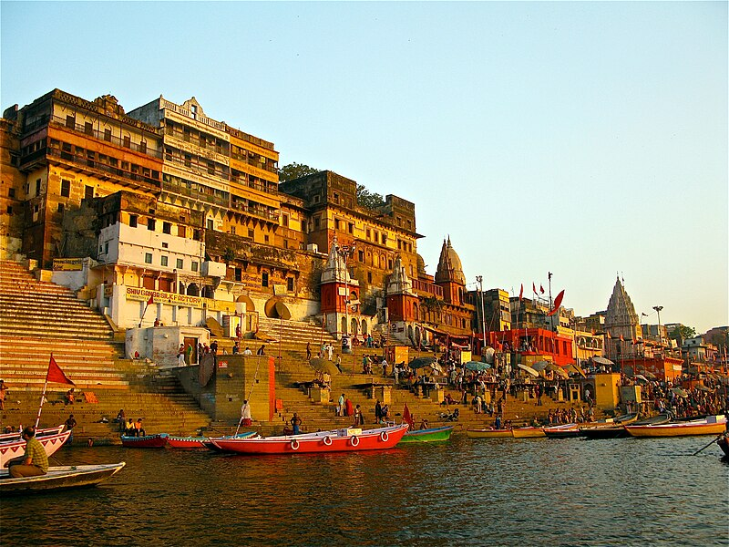

THE NORTHERN PILGRIMAGE, IND
Vaishno Devi - The Holy Caves.
Located in Trikuta hills, 13 km from Katra at the height of 1560 m above sea level with bright clouds and thinning air, this town is the holy cave temple of Mata Vaishnodevi, with spirituality and vibrancy lingering in the atmosphere.
Best Time To Visit: Throughout the yearAmarnath Cave - A haven for pilgrims.
Amarnath is one of the most important pilgrimage in India for the worshippers of Lord Shiva. The Amarnath cave is haven to an enshrined image of ice called the Shivaling formed naturally, which resembles Lord Shiva.
Best Time To Visit: May to SeptemberHaridwar - Ganges' wave of religion and spirituality.

No spiritual journey can ever be considered complete without a visit to Haridwar, one of the holiest pilgrimage sites for Hindus. Literally meaning 'the abode of Lord Vishnu', Haridwar, located in the Garhwal region of Uttarakhand, is a land of legends and myths. Considered as one of the seven holiest cities in India, Haridwar sees millions of people flock to it every year to pay their respects to the Lord, or to wash away their sins. However, with the passage of time, Haridwar has evolved from being a mere religious city to a multifaceted cultural and spiritual centre, and only after exploring Haridwar will you realize that there is a lot more to the city than just visiting temples and taking a dip in the holy Har ki Pauri. Haridwar has a perennial mystical air around i, and is the perfect holiday option for anyone seeking spiritual connection as well as a chance to indulge in and get closer to nature.
Best Time To Visit: Throughout the yearGangotri Glacier - Source of River Ganges.
This pilgrimage destination situated in Uttarkashi is mostly famous for the four religious centers, or as they say, the Char Dham spots.
Best Time To Visit: April to June, September to NovemberVaranasi - The Spiritual Capital.

A city as old as time itself. A city that has stayed in place and watched as the world has turned and the tides have changed. A city that has stood the test of time for thousands of years. In the words of Mark Twain, "Older than history, older than tradition, older even than legend, And looks twice as old as all of them put together." Varanasi, the city that is more than just the spiritual capital of India. The city which can be aptly described as a melting pot where both life and death come together. The city that you only need to visit once for it to stay with you forever.
Best Time To Visit: October to MarchBodh Gaya - Mahabodhi Tree & the land of Nirvana.

One of the most important pilgrimage sites for Buddhists, Bodhgaya is a village in the state of Bihar. It was here under the Bodhi tree that Gautama Buddha attained enlightenment. The place is bustling with pilgrims all through the year who come to pay their homage in the monasteries, shrines and temples. It also attracts tourists from India and abroad owing to its magnificent Buddha statue, the Mahabodhi Temple and the Bodhi tree.
Best Time To Visit: October to March